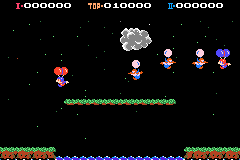

Famicom Mini 13 - Balloon Fight (Japan)
EEPROM 64K Save Format Spec gbakit Built-In 💾 MultiBoot 🎮 4P Link 📡 Wireless
Cartridge Identity
- Game Code
FBFJ(FamilyFBF)- Header Title
BALLOONFIGHT- Maker / Revision
01/ rev0- ROM Size
- 1.0 MiB (1,048,576 B)
- Save Media
EEPROM 64K- SHA-256
441bb0b8c083d308475cf68f2b22b657e219169178f8ae688bddef364fafa66f
Screenshots


Niche & Rare Accessories
Detected niche/rare GBA accessory support: 🔌 Wireless Adapter (RFU_V1023).
Full 343-ROM corpus breakdown in the Cartridge Hardware & Niche Accessories Reference · auto-detected from ROM bytes via
gbakit inspect.
- Wireless Adapter (RFU_V1023)
- Nintendo Wireless Adapter (
AGB-015) SDKRFU_V1023+RFU-MBOOT
Link Cable & Multiplayer Communications
This title contains detected communication capabilities: 💾 MultiBoot 🎮 4P Link 📡 Wireless.
Detailed protocol specifications, SIO registers, Joybus commands, and MultiBoot sequences are documented in the Link & Multiplayer Reference.
- Multi-Player SIO (4P)
- 16-bit ring network · SIOCNT (
0x04000128) literals:0x005798,0x005b04,0x005c58· SIODATA32/SIOMULTI0 (0x04000120) literals:0x000e58,0x005aa8,0x005d80 - Nintendo Wireless Adapter
- AGB-015 RFU driver signature
RFU-MBOOTat offset0x0062d0 - Nintendo Wireless Adapter
- AGB-015 RFU driver signature
RFU-MBOOTat offset0x014678 - Nintendo Wireless Adapter
- AGB-015 RFU driver signature
RFU-MBOOTat offset0x018ad0 - Nintendo Wireless Adapter
- AGB-015 RFU driver signature
NINTENDOSio32IDat offset0x0062dc - Nintendo Wireless Adapter
- AGB-015 RFU driver signature
NINTENDOSio32IDat offset0x018adc - Single-Cart MultiBoot
- Single-Cartridge MultiBoot (Download Play) client/server handler · Thumb SWI 0x25 (
0xDF25):0x0008be,0x04cdb2,0x08ad06,0x0ccf8c· SDK signatures:MBOOTat0x0062d4
Battery Save Format Specification
Open Full Save Format SpecDownload save-format.json
- Specification Coverage
- 4 mapped fields · 0 verified checksum(s) · Confidence: HIGH
- gbakit Built-In Support
- Built-in (FBFJ)
gbakit save verify FBFJ save.sav
gbakit save decode FBFJ save.sav
gbakit save fix FBFJ damaged.sav -o repaired.savObserved Battery Save Layout
- Fill Byte & Active Size
0x00fill · 512–512 / 8,192 B active (entropy 0.16 bits/B)- Active Offset Ranges
0x0–0x1FF(1 total)- ASCII Magic / Headers
_NOOV- Observed Variable Regions
- 0 bytes across 0 spans: None
- Candidate Checksum/Counter Spans
- None
Asset Map (formatkit.asset-map.v1)
Download FBFJ-r0-441bb0b8c083d308.asset-map.json.gz (2,610 B (2.5 KiB)) Verified PASS · 25.16% coverage
| Metric | Bytes / Value | Entries |
|---|---|---|
| Identified | 263,808 B (257.6 KiB) (25.16%) | 18 |
| Mapped | 0 B (0.00%) | 0 |
| Opaque | 0 B (0.00%) | 0 |
| Unknown | 784,768 B (766.4 KiB) (74.84%) | 18 |
| Total ROM Size | 1,048,576 B (1.00 MiB) | 36 |
| Coverage % | 25.16% | — |
| Entries w/ Code Refs | 16 / 36 (44.44%) | — |
Top Identified Formats: rom.multiboot (1 · 262,144 B (256.0 KiB)) · gfx.gba-palette (16 · 1,472 B (1.4 KiB)) · gba.rom-header (1 · 192 B)
Largest unknown Extents (Headerless / Custom Asset Candidates)
| Offset | Size | Shannon Entropy | Code Refs |
|---|---|---|---|
0x000A0A4C | 390,580 B (381.4 KiB) | 8.000 bits/B | 0 |
0x000604C4 | 263,528 B (257.4 KiB) | 8.000 bits/B | 0 |
0x0004D658 | 76,232 B (74.4 KiB) | 7.999 bits/B | 0 |
0x000051B0 | 33,960 B (33.2 KiB) | 7.346 bits/B | 0 |
0x00001188 | 6,776 B (6.6 KiB) | 6.079 bits/B | 0 |
gzip -dk FBFJ-r0-441bb0b8c083d308.asset-map.json.gz && gbakit map verify rom.gba FBFJ-r0-441bb0b8c083d308.asset-map.json
gbakit assets export rom.gba --asset-map FBFJ-r0-441bb0b8c083d308.asset-map.json -o out/Text, Fonts & Scene Data
- Primary Text Encoding
- Compressed / custom-encoded text
- Font & VWF Indicators
- No VWF Table No 1bpp Font · BIOS SWIs: BitUnPack
0x10:15· LZ770x11/12:27· Huffman0x13:9· RLE0x14/15:18 - Scene & Packaging
0ROM pointer tables (≥32 entries,0≥200) ·0relativeu32TOCs ·52OAM metasprite hits